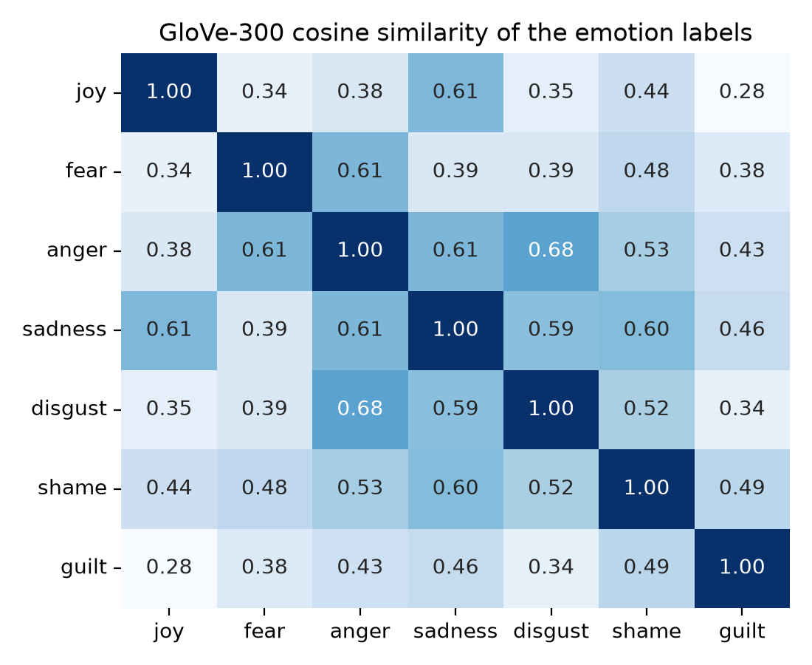
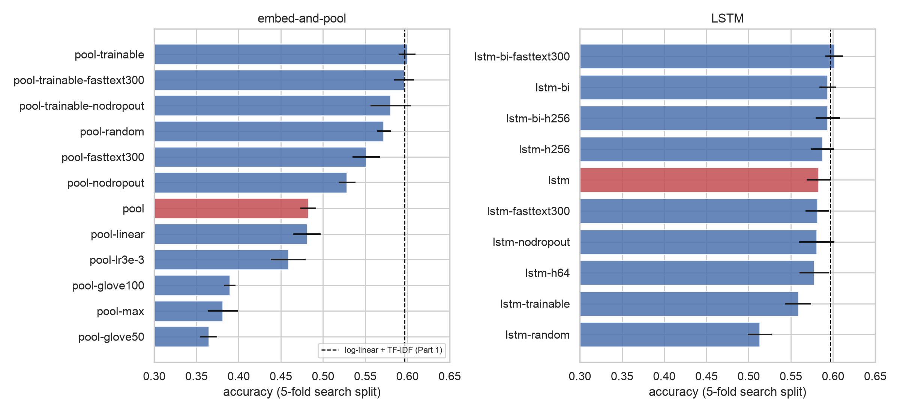
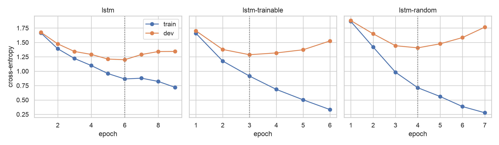
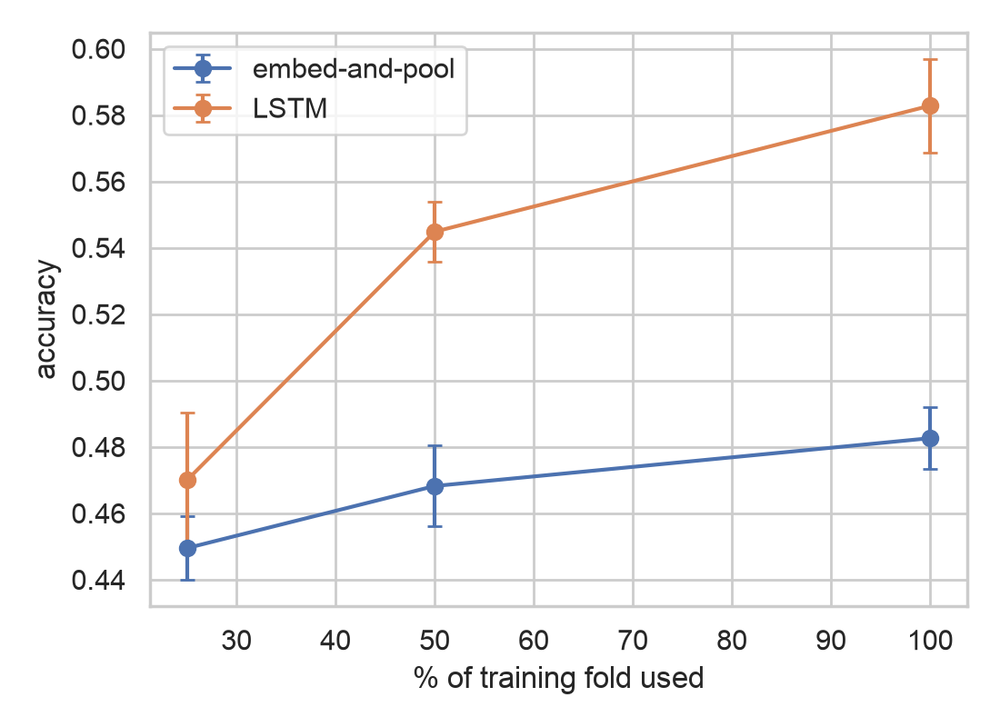
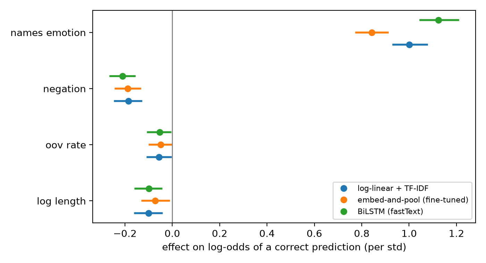

<title>ISEAR Embeddings and Encoders</title>
<meta name="claude:viewport-fit-sides" content="cover">
<link rel="preconnect" href="https://fonts.googleapis.com">
<link rel="stylesheet" href="https://fonts.googleapis.com/css2?family=Bricolage+Grotesque:opsz,wght@12..96,500;12..96,700&family=Public+Sans:wght@400;600&family=JetBrains+Mono:wght@500&display=swap">
<style>
/* layout: fixed 1280x720 slides, a finding as the title, the answer on the left and the evidence on the right */
:root {
  --page: #e9ecf1;
  --paper: #ffffff;
  --ink: #18212f;
  --muted: #586374;
  --rule: #d5dbe3;
  --accent: #2b4f8c;
  --accent-soft: #e8eef8;
  --joy: #e0a526; --fear: #6a4c93; --anger: #c8432b; --sadness: #3a6ea5; --disgust: #6b8f3c; --shame: #c06a8c; --guilt: #7a6650;
  --display: "Bricolage Grotesque", "Avenir Next", "Helvetica Neue", Arial, sans-serif;
  --body: "Public Sans", "Helvetica Neue", Arial, sans-serif;
  --mono: "JetBrains Mono", "SF Mono", Menlo, monospace;
  color-scheme: light;
}
* { box-sizing: border-box; }
body { background: var(--page); color: var(--ink); font-family: var(--body); margin: 0; }
.deck { display: grid; justify-items: center; gap: 28px; padding-block: 28px; padding-left: max(16px, env(safe-area-inset-left, 0px)); padding-right: max(16px, env(safe-area-inset-right, 0px)); }
.frame { width: 100%; max-width: 1280px; }
.slide { width: 1280px; height: 720px; background: var(--paper); box-shadow: 0 1px 3px rgba(24, 33, 47, .12); position: relative; display: grid; grid-template-rows: auto auto 1fr auto; padding: 44px 56px 26px; gap: 14px; overflow: hidden; transform-origin: top left; }
.eyebrow { display: flex; gap: 14px; align-items: baseline; font-family: var(--mono); font-size: 14px; color: var(--accent); letter-spacing: .06em; text-transform: uppercase; }
.eyebrow span:last-child { color: var(--muted); text-transform: none; letter-spacing: 0; font-family: var(--body); font-size: 15px; }
h1 { font-family: var(--display); font-weight: 700; font-size: 35px; line-height: 1.12; margin: 0; text-wrap: balance; max-width: 1100px; letter-spacing: -.01em; }
.body { display: grid; grid-template-columns: 1fr 1fr; gap: 36px; min-height: 0; }
.body.wide-right { grid-template-columns: 0.9fr 1.1fr; }
ul { margin: 0; padding: 0; list-style: none; display: grid; gap: 11px; align-content: start; min-width: 0; }
li { font-size: 16.5px; line-height: 1.42; padding-left: 18px; position: relative; }
li::before { content: ""; position: absolute; left: 0; top: .6em; width: 7px; height: 7px; background: var(--accent); }
li b { font-weight: 600; }
.num { font-family: var(--mono); font-size: .92em; font-variant-numeric: tabular-nums; }
.evidence { display: grid; gap: 12px; align-content: start; min-width: 0; min-height: 0; }
.evidence img { width: 100%; display: block; border: 1px solid var(--rule); }
.caption { font-size: 13px; color: var(--muted); line-height: 1.4; }
table { border-collapse: collapse; width: 100%; font-size: 15px; font-variant-numeric: tabular-nums; }
th { text-align: left; font-weight: 600; font-size: 12.5px; text-transform: uppercase; letter-spacing: .05em; color: var(--muted); border-bottom: 1.5px solid var(--ink); padding: 6px 8px; }
td { padding: 7px 8px; border-bottom: 1px solid var(--rule); }
td.r, th.r { text-align: right; white-space: nowrap; }
tr.best td { background: var(--accent-soft); }
.callout { background: var(--accent-soft); border-left: 4px solid var(--accent); padding: 12px 16px; font-size: 15.5px; line-height: 1.42; }
footer { display: flex; justify-content: space-between; align-items: center; font-size: 12.5px; color: var(--muted); border-top: 1px solid var(--rule); padding-top: 10px; }
.emotions { display: flex; gap: 4px; }
.emotions i { width: 22px; height: 6px; display: block; }
.two { display: grid; grid-template-columns: 1.55fr 1fr; gap: 12px; align-items: start; }
:focus-visible { outline: 2px solid var(--accent); outline-offset: 2px; }
@media print {
  @page { size: 1280px 720px; margin: 0; }
  body { background: var(--paper); }
  .deck { padding: 0; gap: 0; display: block; }
  .frame { max-width: none; height: auto !important; }
  .slide { box-shadow: none; transform: none !important; break-after: page; }
}
</style>

<main class="deck">

<div class="frame"><section class="slide">
  <div class="eyebrow"><span>1 / 6 · Embedding model</span><span>Is the model appropriate for my data, and can I tokenise like it does?</span></div>
  <h1>GloVe and fastText both cover over 99% of ISEAR tokens, after one tokeniser fix for fastText</h1>
  <div class="body">
    <ul>
      <li><b>The data:</b> 7,426 first-person English descriptions of emotional events (median 21 words). General-domain English vectors fit this register.</li>
      <li><b>Candidates:</b> GloVe 6B (Wikipedia + Gigaword, lowercased, 400k words, 50/100/300d) and fastText wiki-news (cased, 1M words, 300d). The tutorial's GloVe 2024 server refused connections, so I used GloVe 6B from the Stanford mirror on Hugging Face.</li>
      <li><b>Tokeniser:</b> NLTK <span class="num">word_tokenize</span> follows the Penn Treebank conventions that GloVe's corpus used: <span class="num">didn't → did + n't</span>. GloVe has a vector for <span class="num">n't</span>; fastText does not, which left 555 negation tokens unknown. I map <span class="num">n't → not</span> and the <span class="num">`` ''</span> quote tokens to <span class="num">"</span> for fastText only.</li>
      <li><b>What is still missing:</b> typos and hyphenated compounds (<span class="num">examn, girl-friend, room-mate, fianct</span>). They are rare, so a subword model is not worth it.</li>
    </ul>
    <div class="evidence">
      <table>
        <thead><tr><th>Model</th><th>Case</th><th class="r">Word types</th><th class="r">Type coverage</th><th class="r">Token coverage</th></tr></thead>
        <tbody>
          <tr><td>GloVe 6B</td><td>lower</td><td class="r num">9,385</td><td class="r num">90.0%</td><td class="r num">99.4%</td></tr>
          <tr><td>fastText wiki-news</td><td>cased</td><td class="r num">10,163</td><td class="r num">93.9%</td><td class="r num">99.6%</td></tr>
          <tr><td>fastText, no <span class="num">n't</span> fix</td><td>cased</td><td class="r num">10,165</td><td class="r num">93.9%</td><td class="r num">99.1%</td></tr>
        </tbody>
      </table>
      <div class="callout">Coverage is not the deciding factor here, because both models miss under 1% of tokens. The choice comes down to what the vectors encode (slide 2) and how well they classify (slides 3 and 4).</div>
      <div class="caption">Coverage counts ISEAR tokens that have a vector. fastText falls back to the lowercased form when the cased token is missing. Source: <span class="num">part2/explore.py</span>.</div>
    </div>
  </div>
  <footer><span>NLP1 Project 2 · ISEAR 7-way emotion classification</span><span class="emotions" aria-label="joy, fear, anger, sadness, disgust, shame, guilt"><i style="background:var(--joy)"></i><i style="background:var(--fear)"></i><i style="background:var(--anger)"></i><i style="background:var(--sadness)"></i><i style="background:var(--disgust)"></i><i style="background:var(--shame)"></i><i style="background:var(--guilt)"></i></span></footer>
</section></div>

<div class="frame"><section class="slide">
  <div class="eyebrow"><span>2 / 6 · What the embeddings capture</span><span>Useful similarities, evidence against an alternative, limitations</span></div>
  <h1>Neighbours are emotional, but the seven emotions sit close together, opposites included</h1>
  <div class="body">
    <ul>
      <li><b>Good neighbours:</b> in GloVe-300, <i>shame</i> is closest to <span class="num">disgrace, humiliation, embarrassment</span> and <i>joy</i> to <span class="num">delight, sadness, happiness</span>.</li>
      <li><b>Similar contexts are not similar feelings:</b> cos(joy, sadness) = <span class="num">0.61</span> and cos(love, hate) = <span class="num">0.45</span> in GloVe, <span class="num">0.71</span> in fastText. Opposites share contexts ("I felt ___ when…").</li>
      <li><b>Task test (zero-shot):</b> labelling each text with the emotion word closest to its mean vector gives <span class="num">14.6%</span> for GloVe, which is chance (<span class="num">14.3%</span>), and <span class="num">21.3%</span> for fastText. Frozen pooling agrees: fastText <span class="num">55.1%</span> vs GloVe <span class="num">48.3%</span>.</li>
      <li><b>Limitations:</b> one vector per word, with no context and no negation ("not happy" pools like "happy"). Gender bias: <span class="num">man : doctor :: woman : nurse</span> (GloVe-50, top 1).</li>
      <li><b>Most troubling for this task:</b> shame and guilt (cos <span class="num">0.49</span> GloVe, <span class="num">0.61</span> fastText) were the most confused pair in Part 1, and negation is common (30% of texts).</li>
    </ul>
    <div class="evidence">
      
      <div class="caption">Off-diagonal similarities run from 0.28 to 0.68 in GloVe-300 and from 0.47 to 0.74 in fastText.</div>
    </div>
  </div>
  <footer><span>NLP1 Project 2 · ISEAR 7-way emotion classification</span><span class="emotions" aria-hidden="true"><i style="background:var(--joy)"></i><i style="background:var(--fear)"></i><i style="background:var(--anger)"></i><i style="background:var(--sadness)"></i><i style="background:var(--disgust)"></i><i style="background:var(--shame)"></i><i style="background:var(--guilt)"></i></span></footer>
</section></div>

<div class="frame"><section class="slide">
  <div class="eyebrow"><span>3 / 6 · Embed and pool</span><span>Which design choices matter? Did pretrained embeddings help over Part 1?</span></div>
  <h1>Frozen pooling trails TF-IDF by 11 points; fine-tuning the embeddings closes the gap</h1>
  <div class="body wide-right">
    <ul>
      <li><b>Baseline</b> (red bar): frozen GloVe-300, mean pooling, a 128-unit ReLU layer, dropout 0.5, AdamW at 1e-3. It scores <span class="num">48.3%</span>.</li>
      <li><b>Helps:</b> fine-tuning the embeddings (<span class="num">+11.7 → 60.0%</span>), fastText instead of GloVe (<span class="num">+6.8</span>), no dropout (<span class="num">+4.6</span>), and more dimensions (50d <span class="num">36.5</span>, 100d <span class="num">39.0</span>, 300d <span class="num">48.3</span>).</li>
      <li><b>Hurts:</b> max pooling (<span class="num">−10.2</span>) and a learning rate of 3e-3 (<span class="num">−2.4</span>). Removing the hidden layer changes nothing (<span class="num">48.1</span>).</li>
      <li><b>What pretraining adds:</b> trainable random vectors reach <span class="num">57.2%</span> and pretrained vectors <span class="num">60.0%</span>. Pretraining is worth about 3 points as an initialisation, but frozen vectors alone are not enough.</li>
      <li><b>Against Part 1</b> (same folds, 10 × 3): fine-tuned pooling <span class="num">60.4%</span> vs log-linear TF-IDF <span class="num">59.7%</span>, P(tie) = <span class="num">0.67</span>. They are practically equivalent.</li>
    </ul>
    <div class="evidence">
      
      <div class="caption">Mean ± std over the 5-fold search split. Each bar changes one setting from the red baseline, except the combined second-round configurations. Dashed line: Part 1 best, 59.7%.</div>
    </div>
  </div>
  <footer><span>NLP1 Project 2 · ISEAR 7-way emotion classification</span><span class="emotions" aria-hidden="true"><i style="background:var(--joy)"></i><i style="background:var(--fear)"></i><i style="background:var(--anger)"></i><i style="background:var(--sadness)"></i><i style="background:var(--disgust)"></i><i style="background:var(--shame)"></i><i style="background:var(--guilt)"></i></span></footer>
</section></div>

<div class="frame"><section class="slide">
  <div class="eyebrow"><span>4 / 6 · Recurrent encoder</span><span>Design choices, data size, trainable embeddings, over-fitting, how far it goes</span></div>
  <h1>A frozen BiLSTM over fastText reaches 60.4%, but fine-tuning makes the LSTM overfit</h1>
  <div class="body">
    <ul>
      <li><b>Composition helps with frozen vectors:</b> a frozen GloVe LSTM with 128 units scores <span class="num">58.3%</span>, 10 points above frozen pooling.</li>
      <li><b>Helps a little:</b> bidirectional (<span class="num">59.4</span>), and bidirectional with fastText (<span class="num">60.1</span>, the best). Hidden size 64/128/256 and dropout stay within ±1 point, which is fold noise.</li>
      <li><b>Embeddings:</b> frozen <span class="num">58.3</span> beats fine-tuned <span class="num">55.9</span>, which beats random <span class="num">51.3</span>. Fine-tuning adds 2.5M parameters for 6k texts: dev loss bottoms out at epoch 3 while training loss keeps falling.</li>
      <li><b>Data size:</b> 25% → <span class="num">47.0</span>, 50% → <span class="num">54.5</span>, 100% → <span class="num">58.3</span>. The LSTM gains far more from data than pooling does (<span class="num">45.0 → 48.3</span>) and has not plateaued.</li>
      <li><b>How far:</b> the final BiLSTM (60.4%) ties fine-tuned pooling (P(tie) = <span class="num">0.84</span>) and Part 1 (P(tie) = <span class="num">0.62</span>). It brings no meaningful gain over embed-and-pool.</li>
    </ul>
    <div class="evidence">
      
      <div class="two">
        
        <div class="caption">Top: search fold 0. The dotted line marks the epoch kept by early stopping on the inner dev split. Left: learning curve on the search split, mean ± std over 5 folds.</div>
      </div>
    </div>
  </div>
  <footer><span>NLP1 Project 2 · ISEAR 7-way emotion classification</span><span class="emotions" aria-hidden="true"><i style="background:var(--joy)"></i><i style="background:var(--fear)"></i><i style="background:var(--anger)"></i><i style="background:var(--sadness)"></i><i style="background:var(--disgust)"></i><i style="background:var(--shame)"></i><i style="background:var(--guilt)"></i></span></footer>
</section></div>

<div class="frame"><section class="slide">
  <div class="eyebrow"><span>5 / 6 · Decisions under uncertainty</span><span>How the search was structured and how variance was tracked</span></div>
  <h1>Every final system except frozen pooling lands within ±1 point of Part 1's best</h1>
  <div class="body">
    <ul>
      <li><b>Two-stage search:</b> first one change at a time from one baseline per encoder (22 configurations), then a round combining the winners (4 more). Both ran on a separate 5-fold split (seed 100), so the final folds played no part in choosing.</li>
      <li><b>No test leakage:</b> early stopping (patience 3) uses a 10% stratified dev split inside each training fold. The test fold is touched once.</li>
      <li><b>Final protocol:</b> stratified 10-fold × 3 repeats on the same folds as Part 1, so every comparison is paired.</li>
      <li><b>Variance:</b> fold-to-fold std is 1.6 to 2.2 points. Search gaps under about 1.5 points (LSTM size, dropout) are treated as noise.</li>
      <li><b>Bayesian correlated t-test</b> (Benavoli et al., 2017) with a ROPE of ±1 point, as in Part 1. A comparison is decided only when one region has P &gt; 0.95.</li>
      <li><b>Limitation:</b> one-at-a-time search misses interactions. Fine-tuning plus no dropout (<span class="num">58.0</span>) was worse than fine-tuning alone (<span class="num">60.0</span>).</li>
    </ul>
    <div class="evidence">
      <table>
        <thead><tr><th>System (10 × 3 CV)</th><th class="r">Accuracy</th><th class="r">Macro-F1</th><th class="r">P(worse)</th><th class="r">P(tie)</th><th class="r">P(better)</th></tr></thead>
        <tbody>
          <tr><td>Log-linear + TF-IDF (Part 1)</td><td class="r num">59.7 ± 1.6</td><td class="r num">59.4</td><td class="r num">–</td><td class="r num">–</td><td class="r num">–</td></tr>
          <tr><td>Pool, frozen GloVe</td><td class="r num">48.6 ± 2.2</td><td class="r num">48.0</td><td class="r num">1.00</td><td class="r num">0.00</td><td class="r num">0.00</td></tr>
          <tr><td>Pool, fine-tuned GloVe</td><td class="r num">60.4 ± 1.6</td><td class="r num">60.1</td><td class="r num">0.00</td><td class="r num">0.67</td><td class="r num">0.33</td></tr>
          <tr><td>LSTM, frozen GloVe</td><td class="r num">59.4 ± 1.6</td><td class="r num">59.1</td><td class="r num">0.17</td><td class="r num">0.78</td><td class="r num">0.05</td></tr>
          <tr class="best"><td>BiLSTM, frozen fastText</td><td class="r num">60.4 ± 1.7</td><td class="r num">60.0</td><td class="r num">0.01</td><td class="r num">0.62</td><td class="r num">0.37</td></tr>
        </tbody>
      </table>
      <div class="caption">Probabilities compare each system with Part 1's log-linear + TF-IDF. BiLSTM vs fine-tuned pooling: P(tie) = 0.84.</div>
    </div>
  </div>
  <footer><span>NLP1 Project 2 · ISEAR 7-way emotion classification</span><span class="emotions" aria-hidden="true"><i style="background:var(--joy)"></i><i style="background:var(--fear)"></i><i style="background:var(--anger)"></i><i style="background:var(--sadness)"></i><i style="background:var(--disgust)"></i><i style="background:var(--shame)"></i><i style="background:var(--guilt)"></i></span></footer>
</section></div>

<div class="frame"><section class="slide">
  <div class="eyebrow"><span>6 / 6 · Error analysis</span><span>Which text features predict when each design gets it right?</span></div>
  <h1>Texts that name their own emotion are easy for every system; negation is hard for all</h1>
  <div class="body">
    <ul>
      <li><b>Features:</b> log length, OOV rate, negation (<span class="num">not, n't, no, never…</span>, 30% of texts), and whether the text names its own emotion (the label word or a close synonym, 24% of texts).</li>
      <li><b>Model:</b> Bayesian logistic regression of per-text correctness, with a per-system intercept shift, per-system slopes and Laplace(0, 1) priors. Fit with NUTS (2 chains × 1,000 draws, R̂ = 1.00) on out-of-fold predictions from repeat 0.</li>
      <li><b>Naming the emotion</b> is the largest effect (<span class="num">+0.84</span> to <span class="num">+1.12</span> log-odds). BiLSTM accuracy is <span class="num">92%</span> on those texts and <span class="num">50%</span> on the rest, so all three designs lean on the lexical shortcut, the BiLSTM most.</li>
      <li><b>Negation</b> costs every system about the same (<span class="num">−0.19</span> to <span class="num">−0.21</span>). Word order did not buy the LSTM better handling of negation.</li>
      <li><b>Length and OOV</b> have small negative effects once naming is controlled for (longer texts name their emotion more often, r = 0.33).</li>
      <li><b>Next priorities:</b> texts that describe an event without naming the emotion, negation scope (contextual encoders), and separating shame from guilt.</li>
    </ul>
    <div class="evidence">
      
      <div class="caption">Posterior mean and 95% interval per standardised feature. Systems: Part 1 log-linear + TF-IDF, fine-tuned embed-and-pool, frozen fastText BiLSTM.</div>
    </div>
  </div>
  <footer><span>NLP1 Project 2 · ISEAR 7-way emotion classification</span><span class="emotions" aria-hidden="true"><i style="background:var(--joy)"></i><i style="background:var(--fear)"></i><i style="background:var(--anger)"></i><i style="background:var(--sadness)"></i><i style="background:var(--disgust)"></i><i style="background:var(--shame)"></i><i style="background:var(--guilt)"></i></span></footer>
</section></div>

</main>

<script>
function fit() {
  document.querySelectorAll(".frame").forEach(function (frame) {
    var slide = frame.firstElementChild;
    var scale = Math.min(1, frame.clientWidth / 1280);
    slide.style.transform = "scale(" + scale + ")";
    frame.style.height = 720 * scale + "px";
  });
}
window.addEventListener("resize", fit);
window.addEventListener("beforeprint", function () {
  document.querySelectorAll(".frame").forEach(function (f) { f.firstElementChild.style.transform = "none"; f.style.height = "auto"; });
});
window.addEventListener("afterprint", fit);
fit();
</script>
